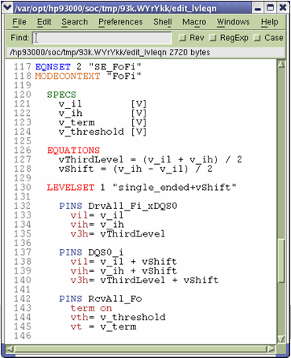

Prepare levels
The following figure shows the different level equations for DQS0 and /DQS0 to shift levels of DQS0.
Please note that the level equations are set up in a way to accomplish pre- and post-amble testing for both DQS and /DQS (inverted DQS) by simply controlling the associated mid-level drive edge without affecting other waveforms.
Pre- and post-amble edges for DQS0 and /DQS0 have the same slew rate.
